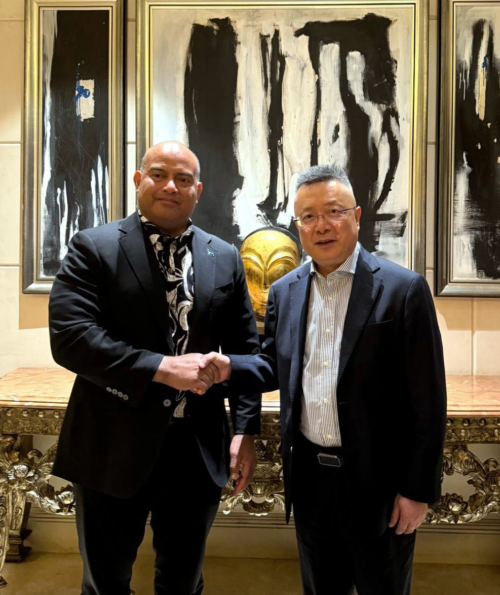

Last Week in the Pacific: Nauru and Tonga Make the Pilgrimage to Beijing
The Chinese Embassy in Nauru hosted a cultural festival and awards ceremony for its #NauruansChinaStory campaign, which encourages Nauruans to post on social media about their experiences with China.
The event included tea ceremonies, dumpling making, and Tai Chi demonstrations.
The campaign fits a broader pattern. For several months, Chinese embassies across the Pacific have posted clips under #BecomingChinese, featuring Westerners praising Chinese practices such as drinking hot water.
China is using Facebook across its Pacific Embassies to promote participation in Chinese cultural activities, turning social media into a cultural diplomacy mechanism.
Summary of PRC Activity
China hosted delegations from Tonga and Nauru last week at markedly different scales. The Speaker of Tonga’s Parliament, Lord Vaea, led a delegation of ten MPs to Beijing and Hebei province for meetings with the CCP’s International Liaison Department and a broader parliamentary conference. Nauru’s Prime Minister David Adeang, by contrast, paid a brief visit to Beijing that included a meeting with Special Envoy Qian Bo.
This Week’s Big Themes:
Lord Vaea’s China Delegation
A large Tongan parliamentary delegation led by Speaker Lord ‘Alipate Vaea traveled to China last week at the Chinese government’s invitation—the most substantial political engagement between China and Tonga since King Tupou’s visit to Beijing last year. The delegation included former Prime Minister Aisake Eke, the Acting Minister of Police, the Minister of Agriculture, and more than a dozen MPs and nobles. Senior officials of the CCP’s International Liaison Department, including Vice Minister Lu Kang, received the delegation. During the trip, MP Kapelieli Lanumata returned to China Agricultural University, where he earned his master’s degree, to address faculty and students—a personal detail showcasing China-Tonga educational ties.
The itinerary combined cultural diplomacy with political messaging. The delegation toured the Forbidden City upon arrival in Beijing, then traveled by high-speed rail to Hebei Province, where it visited the Hebei Provincial Museum, met with the Secretary of the Hebei Provincial CPC Committee, and toured industrial enterprises in Xingtang County—namely glass, pump, and carpet manufacturers. The delegation also visited Zhengding County, where Xi Jinping served as a local official in the early 1980s. Chinese hosts designed the stop around local development stories tied to Xi’s tenure.
The most politically significant event was a thematic dialogue on rural governance and poverty alleviation between the CCP and foreign “political parties,” hosted by ILD Head Liu Haixing and attended by representatives from more than 20 countries. Speaker Vaea delivered a keynote address at the opening ceremony. The ILD, originally created for contact with other communist parties, is now the CCP’s primary organ for party-to-party diplomacy regardless of ideology. Scholars also allege that the department gathers intelligence on foreign politicians and cultivates political assets.
The delegation’s composition carries analytical weight. The delegation mostly drew from Tonga’s informal opposition. Combined with the ILD’s central role, this visit illustrates how China develops political connections beyond sitting governments in the Pacific Islands, creating continuity that survives changes in leadership. Tonga’s Parliament currently has no political parties, which represents an extension of ILD’s model from party-to-party engagement into direct relationship building with individual politicians.
Supporting Events
- Tonga: Parliamentary Delegation Arrives in China
- Tonga: Minister Visits Alma Mater
- Tonga: Delegation Arrives in Hebei
- Tonga: International Liaison Department Dialogue
- Tonga: Delegation Visits Zhengding County
Prime Minister Adeang in Beijing

While the Tongan Parliamentary delegation drew high-level engagement in Beijing, Nauru’s Prime Minister David Adeang visited the city the same week with less fanfare. The Chinese embassy, which promoted Adeang’s Lunar New Year trip to Guangdong last February as a headline event, has posted nothing about the visit. The Nauruan government’s Facebook page remains the only public source.
Adeang arrived in Beijing after attending the Annual Meeting of the Board of Governors of the Asian Development Bank (ADB) in Uzbekistan. The following day, he met with the president of the Asian Infrastructure Investment Bank (AIIB), the China-led multilateral development bank that Beijing established as a parallel to the ADB. Adeang also met with China’s Special Envoy for Pacific Island Country Affairs Qian Bo.
Supporting Events
- Nauru: David Adeang Meets with the AIIB
- Nauru: David Adeang Meets with Qian Bo
- Nauru: David Adeang in Samarkand
* The PRC Pacific Embassies Monitor provides systematic, open-source tracking of Beijing’s public diplomatic activities across the nine Pacific Island Countries hosting Chinese missions. The monitor captures official embassy social media and website posts, supplemented by local sources, to offer a weekly structured intelligence report that bridges critical information gaps on regional engagement.